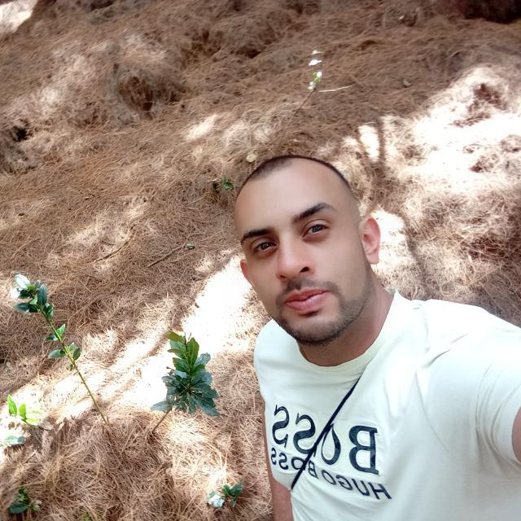
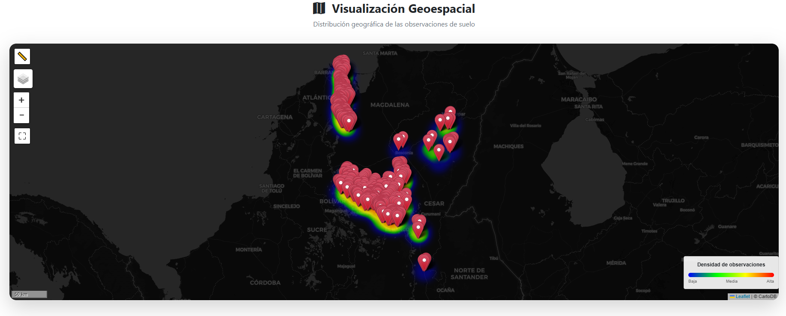
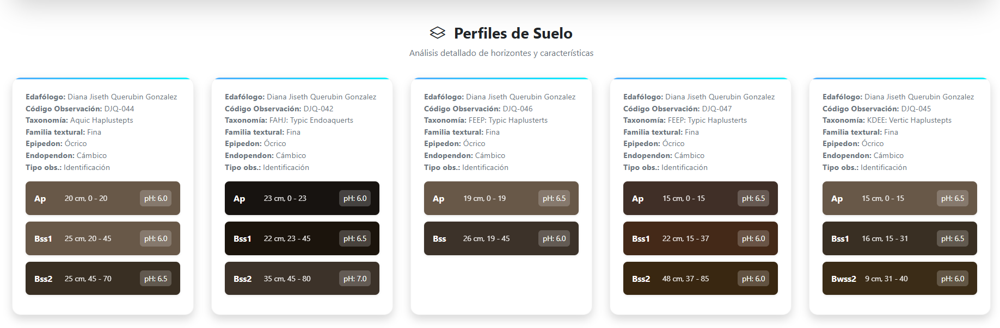

Carlos Eduardo Gómez Rico
Ingeniero Industrial | Desarrollador de Software | Especialista GIS
📍 Bogotá, Colombia | 📧 ing.carlosgomez0219@gmail.com
🚀 Acerca de Mí
Soy Ingeniero Industrial con estudios de posgrado en Desarrollo de Software y más de 10 años de experiencia liderando proyectos en GIS, automatización de procesos, análisis espacial y desarrollo de soluciones tecnológicas para entidades del sector público y privado. Mi enfoque combina la ingeniería con la programación, la visualización de datos y la geografía, permitiendo el desarrollo de herramientas robustas, sostenibles y adaptables a diferentes entornos tecnológicos.
💡 Habilidades y Tecnologías
🗄️ Bases de Datos
💻 Lenguajes de Programación
🗺️ Sistemas GIS
⚙️ Frameworks
🧩 Arquitecturas
📊 Business Intelligence
⚙️ Automatización
✨ Proyectos Destacados

🗺️ Representación Espacial de Datos de Campo
Este proyecto ilustra la representación espacial de datos recolectados en campo, utilizando herramientas de Sistemas de Información Geográfica (SIG) para el análisis y visualización geográfica avanzada. Demuestra la capacidad de transformar datos crudos en información geoespacial valiosa y comprensible.

🌱 Representación Gráfica de Horizontes de Suelos
Gráfico generado mediante secuencias en JavaScript, empleando librerías de la suite AQP y Soil Taxonomy. Este desarrollo permite la homologación y visualización de los horizontes de suelos identificados en estudios, facilitando la interpretación y comparación de perfiles edáficos conforme a estándares internacionales.
📊 Estadísticas de GitHub
✉️ Contacto
¿Interesado en colaborar o tienes una propuesta? ¡No dudes en contactarme!
ing.carlosgomez0219@gmail.com